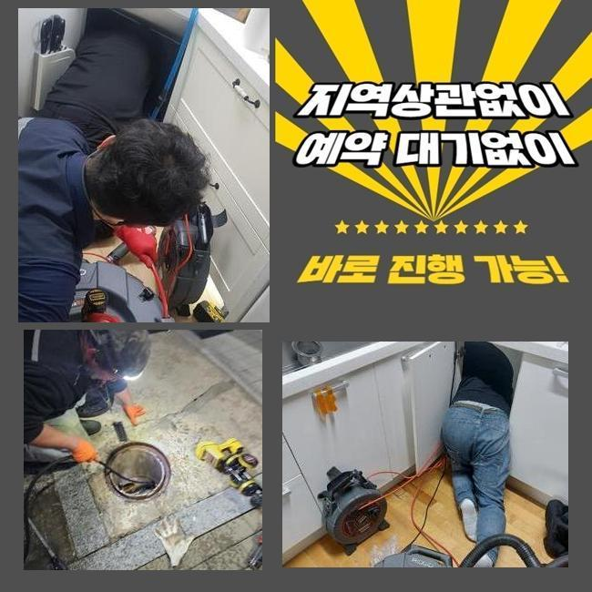
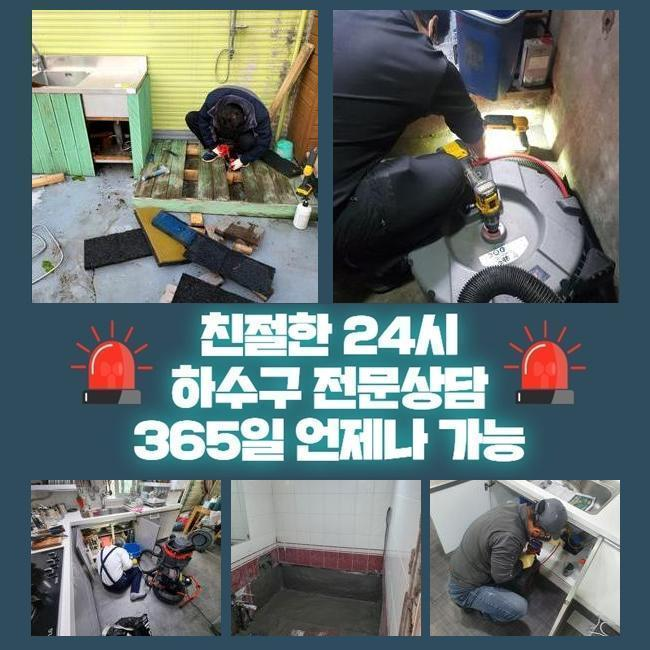
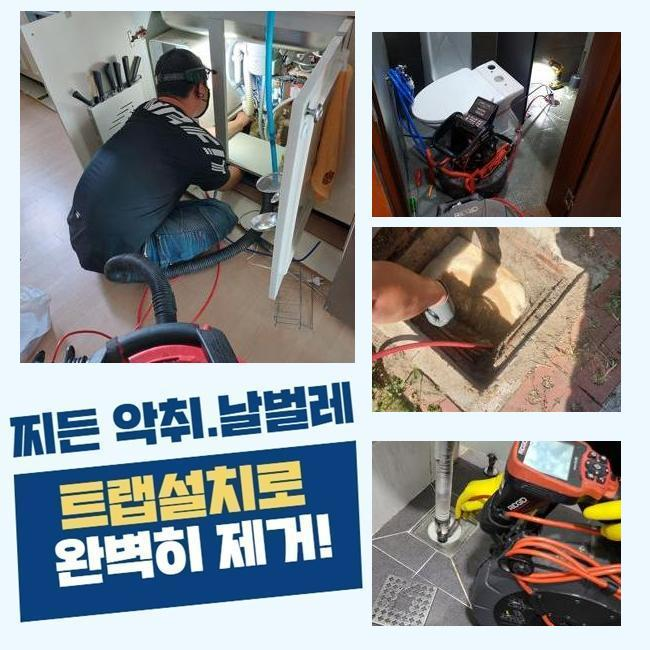
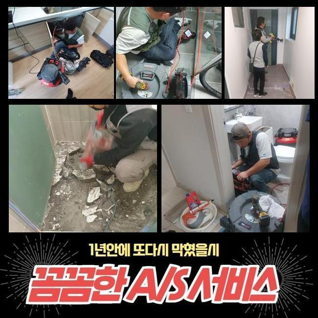
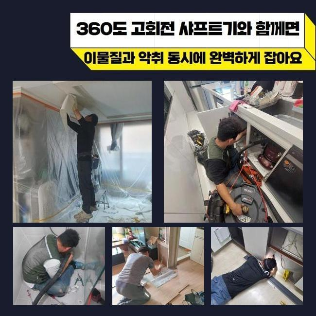
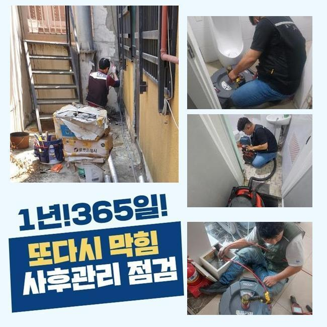

🏠 서대문 현저동오수관역류 연희동 하수구뚫는업체 설비출장
용인 하수구막힘 전문 시공 후기

📋 작업 개요
- 위치: 용인
- 서비스 유형: 하수구막힘, 배관막힘, 집수정막힘, 역류해결, 뚫는업체, 배관청소, 고압세척
- 작업 일시: 2025. 2. 28. 23:33
- 업체명: 하수구수사대 (010-5615-2118)
🔍 문제 상황
서대문 현저동오수관역류 연희동 하수구뚫는업체 설비출장
금일엔 주택에 내방드려 외부라인에 설치된 하수라인을 통수시켜주었어요
전문성이 두드러지는 기기를 통해서 빈틈없이 청소하기에 이르렀습니다
물들이 안내려가는 트러블이 불거진것은 저번주부터라고 하셨죠
하수관은 물들이 흘러가며 자연스럽게 잔여물질들이 흐르는데 내측을 시작으로 해 계속해서 누적되면서 개별관로가 막히게됩니다
잔해물의 누적량과 더불어 흡착까지 진행되었다면 심화됩니다
당연하게도 모두 흘러가기에는 한계들이 존재하죠
이렇게 하수관이 막혀버리는 증세가 생겨나면 자가적인 방식으로 해결될 수 없는 사례가 대다수입니다
의뢰자가 자가조치로 보통 떠올리는것은 클리너제품이나 뜨거운 물들을 부어보는 건데요
문제들이 생기고서 시간들이 길게 흐르지않았을때 시도할 수 있는 조치겠지만 외부라면 이렇다할 해결책이 되지 못해요
야외에서 결함들이 드러날 때엔 직관적으로 시정해보는것이 힘들기에 전문가들의 도움들을 생각해주시는것이 좋은데요

🔎 원인 분석
💡 전문가 진단: 정밀 진단 장비를 사용하여 슬러지의 고착 여부를 판명하고 타격/세척 작업을 실시했습니다.
전문업체의 내방을 통하여 현장에서 어디에서부터 막혀버린것인지 오차없는 원인들을 짚어내는건 물론이며 염기성용액들을 쓰는 방법관 다르게 빈틈없이 이물을 제거하여 향후에도 하수도를 문제없이 관리하도록 하고있어요
이번 통수오류의 또한 저희들은 적합한 장치들을 활용하여 확실히 잔해까지 제거시켜서 깊은부분까지 통수시켜주었어요
진단 결과 밖에 위치한 관로들에서 문제들이 야기되었고 조치하는것이 불가해보여 해결을 요청하셨습니다
저희전문진들은 고객분의 시간들이 괜찮다면 바로 내방하여 그 날에 일련의 과정들을 들어갑니다
문의들을 받은 결과로 문제의스팟은 마당쪽이였어요
단독주택 외부에 존재하는 배수구가 막힌 탓에 우천 시 넘치게되는 상태라고 하셨어요
특히 강수 상황 시 돌멩이나 꽁초처럼 수많은 오염원이 흐르죠
물청소 등을 할때 갑작스레 배수관으로 답답하게 내려가는 현상들이 자주 있었다고 합니다
초반엔 의뢰자께서는 시간들이 흐름에 따라 괜찮아 지겠지 하시고는 수습을 미뤘다고 해요
예상치못한 시점에 해결이 늦었던 까닭인지 연거푸 수도들이 전혀 진전이 없었다고 해요
그후에 며칠간의 기간이 흐른 후 배수되는걸 인지하고서 미뤄선 안되겠다 생각하시어 문의를 주신것이였죠

🔧 작업 과정
마당이 단독으로 있어서 타인들에게 불편들을 옮기진않았으나 스스로 관리책 실시가 진행되야하는 스팟이죠
그 즉시 방문이 가능한 데가 잘 보이지 않아 난처하셨는데 저희업체는 바로 가능한 까닭에 문의를 빠르게 남겨주셨습니다
저희들은 시기막론하고 공휴일에도 찾아가며 빨간날이라도 청소하기에 즉시 찾아뵈어 청소에 착수했죠
배수관은 좁기에 두 눈을 통해 확인하기엔 제약이 있습니다
개별라인을 따라 내시경을 통하여 심층부 부근 위치에 오염물질들이 어떤 양상으로 존재하는지 관찰하는데요
내시경장치로 누적된 이물들을 어떠한 방식들로 긁어내야되는지 판단되면 적재적소에 맞는 방법들을 선택하죠
일단은 샤프트기기를 운용하고 구경이 큰 곳은 고압수청소를 사용해보기로 결론 지었어요
샤프트장치는 몸통에 장착된 케이블에 단단한 노커부속품이 부착되어있는데 이 노커부품이 벽쪽에 고착된 고착물을 분쇄시키는 전문기기입니다
전문가용 기계들을 통해서 확실히 증상회복을 이뤄냈어요
작업을 할 때에 만에하나 수습하지 못하면 금액청구는 일절 없을것이라 고지해드립니다
저희의경우 애초에 해당 장소에 내방하는 경우 출장관련 금액을 받는 일 없이 내방하므로 금액적인 과중이 덜하게되고 뚫음이 불가하다면 금액들은 발생되지 않으므로 주저없이 상담해보시기 바랍니다
뚫음시공 이후에 이렇다 할 성과없이 돌아가면서 출장금액들을 받는 경우들은 단 한건도 없다고 보증합니다
내방한 장소는 바깥에 위치한 곳들로서 자갈 등도 들어간 모습이였고 침전된 기름들과 뒤섞이며 끈적하게 변하고 움직이지 못할정도로 굳어졌습니다
딱딱하게 뭉치게되어 중심부터 배수공간들을 내주었죠
만성적인 고착이 발생해 간단히 해결되는것은 아니었는데 심부라인까지 제거시키기위해선 집수정에서부터 고압노즐 장치를 꺼내야하는 상태가었습니다
고압세척기기들을 통해서 안정적으로 조치가 필요했던 현상이었습니다
내시경카메라를 사용하면서 깊숙한부분까지 작업해주었지만 통수들이 복구된 현상이 아니었습니다
왜냐하면 폐기물과 기름성분이 구간별로 구석까지 쌓이게되며 흡착된 형태였습니다


✅ 작업 완료
샤프트기기가 닿을 수 없는 지점으로서 고압노즐분사가 동반되야했답니다
그후에 고수압의 기기를 써 기름성분을 제거시키며 엘보부분에까지 흡착된 잔해들을 탈락시켜 청소했는데요
확실히 제거시키니 점진적으로 협소했던 배관으로 배수들이 이뤄졌고 내측의 구간들도 배출들이 이뤄졌죠
해당 내용들을 고객분에게 안내드리고 모든 작업은 마무리됐습니다
재발될 수 없게 사용하실 때 지속적으로 관리해보시고 혹여 1년내에 반복하여 골치아프게한다면 저희의 전문진들이 A/S서비스를 제공해드리니 심려치 마십시오!



⚠️ 하수구 배관 막힘 예방 및 관리 가이드
- ✅ 머리카락, 비닐, 물티슈 등 물에 분해되지 않는 이물질은 하수구 유입을 절대 금지해 주세요.
- ✅ 하수구 거름망을 씌우고 모여진 이물질은 주기적으로 쓰레기통에 바로 비워주셔야 합니다.
- ✅ 배관 노후가 심할 경우 이물질이 더 쉽게 걸리므로 주기적인 배관 세척(고압세척 등)을 권장합니다.
- ✅ 작업 후 1년 이내 재발 시 하수구수사대에서 무상 A/S 보증 서비스를 제공합니다.
💡 핵심 정리
- 확실한 장비 작업(내시경 점검 및 샤프트 스케일링)으로 원인을 뿌리 뽑습니다.
- 작업 후 1년 이내에 동일한 부위 재발 시 100% 무상 A/S 서비스를 보장합니다.
- 서울 · 경기 · 인천 전 지역에 24시간 언제든 긴급 출동할 수 있도록 항시 대기 중입니다.
❓ 자주 묻는 질문 (FAQ)
🚨 용인 하수구막힘 문제로 고민이신가요?
정확한 원인 진단과 확실한 시공으로 재발 없는 해결을 약속드립니다.
24시간 긴급 출동 | 서울 · 경기 · 인천 전지역 | 1년 내 재발 시 무상 A/S